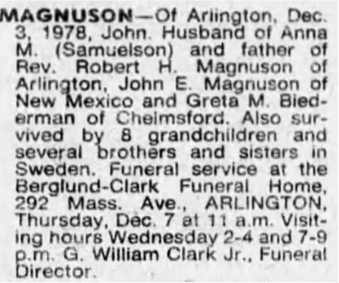

Född 18 september 1896 i Elnaryd, Vislanda, Kronoberg, Sverige 18 20 16 .
Död 29 maj 1981 i Arlington Heights, Massachusetts, USA
|
Född
1893-08-13
i Nyhem, Trästen, Vislanda (G)
1
.
Död 3 december 1978 i Arlington Heights, Massachusetts, USA 2 . |
 |
|
John Magnusson
Född 1893-08-13 i Nyhem, Trästen, Vislanda (G) 1 . Död 3 december 1978 i Arlington Heights, Massachusetts, USA 2 . |
F
August Magnusson.
Född 1864-06-13 i Sörängen Snörshult, Vislanda (G) 3 . Död 1957-02-14 i Haga, Lindås Östregård, Vislanda (G) Kyrkväktare Hemmansägare 1894 Järnvägsarbetare Halmstad Bolmen Järnväg 1888-04-17 4 . |
FF
Magnus Carlsson.
Född 1824-12-13 i Kråketorpet, Aringsås (G) 3 . Död 1888-01-27 i Nyhem, Trästen, Vislanda (G) 5 . |
FFF Carl Bång. Född 1787-07-26 i Hörda Söregård, Berga (G) 6 . Död Enkl Fattighj Ålderdomssvaghet 67 år 1856-07-31 i Aringsås Blommagård, Aringsås (G) 7 . Soldat mellan 1811-02-18 och 1825-12-01 i Soldattorp 79, Aringsås (G) |
|
FFM Ingeborg Jönsdotter. Född 1789-07-08 i Långhult Norregård, Ryssby (G) 3 . Död Hustru Frossa 41 år 11 mån 21 dag 1831-07-29 i Aringsås Blommagård, Aringsås (G) 7 . |
|||
|
FM
Anna Petersdotter.
Född 1829-11-11 i Sjötorp, Vislanda, Kronoberg, Sverige 8 9 . Död 1906-08-27 i Skeppshult, Vislanda, Kronoberg, Sverige 8 . |
FMF Peter Andersson. Född 1802-12-12 i Långhult, Ryssby (G) Död 1832-01-12 i Håramoen, Vislanda, Kronobergs län |
||
|
FMM Stina Andersdotter. Född 1803-03-01 i Moen, Vislanda (G) 3 . Död 1874-09-29 i Snöreshult, Vislanda, Kronoberg, Sverige |
|||
|
M
Anna Johannidotter.
Född 1867-05-29 i Lundbyholm, Lindås Västregård, Vislanda (G) 3 . Död Lungsot 1913-04-20 i Hagalund, Skeppshult, Vislanda (G) |
MF
Johannes Larsson.
Född 1822-09-10 i Moen, Vislanda (G) 3 . Död 1907-06-09 i Lundbyholm, Lindås Västregård, Vislanda (G) 8 . Kyrkväktare mellan 1864 och 1907 i Vislanda (G) 10 . |
MFF Lars Pehrsson. Född 1789-09-24 i Haghult, Virestad (G) 3 . Död 1871-12-07 i Kolabotten, Moshult, Vislanda (G) 11 . |
|
|
MFM Elin Danielsdotter. Född 1794-04-03 i Geramoen, Blädinge (G) 12 . Död 1863-09-21 i Kolabotten, Moshult, Vislanda (G) 7 . |
|||
|
MM
Kathrina Petersdotter.
Född 1824-12-13 i Lindås Östregård, Vislanda, Kronoberg, Sverige Död 1911-02-08 i Lundbyholm, Lindås Västregård, Vislanda (G) |
MMF Peter Pehrsson. Född 1791-05-14 i Stora Skörda, Vislanda (G) 13 . Död 1868-07-17 i Lundbyholm, Lindås Västregård, Vislanda (G) 14 . |
||
|
MMM Märta Jonsdotter. Född 1798-03-30 i Lindås Östregård, Vislanda 3 . Död Nerffeber 42 år 1840-04-09 i Lindås, Vislanda (G) 7 . |
|
Relation med
*Anna Martina Magnuson.
Född 18 september 1896 i Elnaryd, Vislanda, Kronoberg, Sverige 18 20 16 . Död 29 maj 1981 i Arlington Heights, Massachusetts, USA |
 Född
13 november 1929
i Arlington Heights, Massachusetts, USA
21
18
22
16
.
Född
13 november 1929
i Arlington Heights, Massachusetts, USA
21
18
22
16
.
Framställd 2026-09-21 med hjälp av Disgen version 2025.